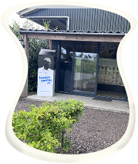
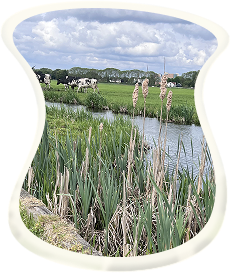
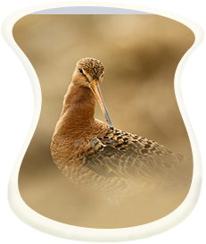

Rond Amsterdam, voor Amsterdam
Boeren van Amstel
met trots
50+
partners in Amsterdam

sinds 2018
104 km
slootranden hersteld

tot 2030
1000+ km
slootranden willen herstellen


Grutto zegt:
Welkom in het Amstelgebied!
Ik woon met meer dan 30 soorten dieren en planten in de slootranden ergens in de Rondehoep. Wil je met mij vliegen naar de Rondehoep?
Ontdek de kaart